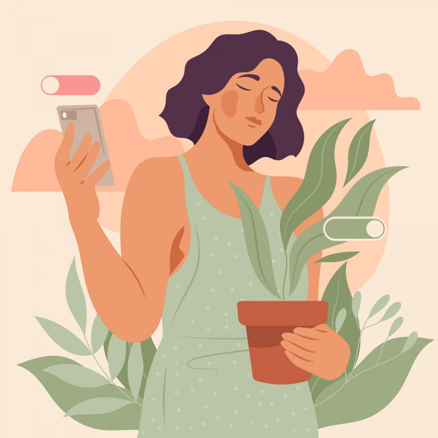

Возможно, когда-то вы замечали за собой нечто подобное: вы сидите в кафе за общим столом, и вам нужна, допустим, соль. Она стоит рядом с незнакомым человеком. И вместо того чтобы просто попросить: «Передайте, пожалуйста», вы тянетесь через весь стол, неловко задеваете салфетки, лишь бы не нарушить невидимую границу. Потому что попросить - значит признать свою потребность. А это иногда кажется страшнее, чем остаться без соли.
Или другая ситуация: кто-то рядом хмурится, и ваше внутреннее радио мгновенно настраивается на его волну. Вы начинаете лихорадочно вспоминать: «Что я сделала не так? Чем могла его задеть?» Хотя, возможно, человек просто вспомнил, что забыл выключить утюг. Пример, конечно, утрированный, но вы уже чувствуете вину, будто ваше существование само по себе может быть неудобным.
Именно поэтому мы заранее извиняемся. За то, что заняли место в лифте. За то, что попросили повторить вопрос. За то, что позволили себе устать.
Эти маленькие ежедневные ритуалы - не просто неловкость. Это язык, на котором наше внутреннее «я» говорит: «Будь тише. Занимай меньше места. Не обременяй других своим присутствием». Мы несём на себе невидимый груз ответственности за настроение окружающих, за их комфорт, за то, чтобы всё было гладко. А свои сигналы: усталость, потребность в помощи, простое «мне это не нравится», мы учимся глушить первыми.
Как можно исправить эту ситуацию?
Для начала попробовать перевести внимание. Не на то, как нас воспримут, а на то, что мы чувствуем в этот самый момент. Не глобально, а очень конкретно.
Для этого достаточно сделать одну простую вещь. Вам нужно отложить телефон, сесть поудобнее и задать себе всего три вопроса, прислушиваясь не к мыслям, а к ощущениям в теле:
- Где во мне сейчас живёт напряжение? Может быть, между лопаток, в сжатых челюстях, в животе?
- На что оно похоже? На тугой узел, на тяжёлый камень, на дрожь?
- Чего ему хочется? Распрямиться? Сжаться в комок и побыть в тишине? Сделать глубокий, по-настоящему полный вдох?
Это не специальная психологическая техника. Это - простой способ на минуту выключить «радар», сканирующий чужие ожидания, и включить «приёмник», ловящий сигналы собственного тела. Оно не умеет врать: его усталость - не предательство по отношению к другим, а честная просьба о помощи по отношению к вам. Его желание отодвинуться от человека, который истощает, - не грубость, а инстинкт самосохранения.
Когда мы научаемся замечать это, происходит странное: мы понимаем, что просьба о помощи - это не обуза, а акт доверия, который позволяет другому человеку проявить заботу. Что сказать «я устала» - это не слабость, а смелость обозначить границу своей человечности. Что заменить автоматическое «извините» на простое «спасибо за терпение» - это не наглость, а шаг к тому, чтобы перестать извиняться за факт своего существования.
Мир не рухнет, если вы перестанете держать его на своих плечах. Он, возможно, станет даже легче и искреннее, потому что в нём появится место не для идеальной, вечно справляющейся женщины, а просто для живой. Для той, которая может устать, может не знать ответа, может нуждаться в соли или в тишине. И которая имеет на это полное право.
Статья подготовлена на основе материалов психологической практики. Если тема откликнулась, вы можете связаться со мной для обсуждения возможности индивидуальной работы.
Статья опубликована на b17.ru.